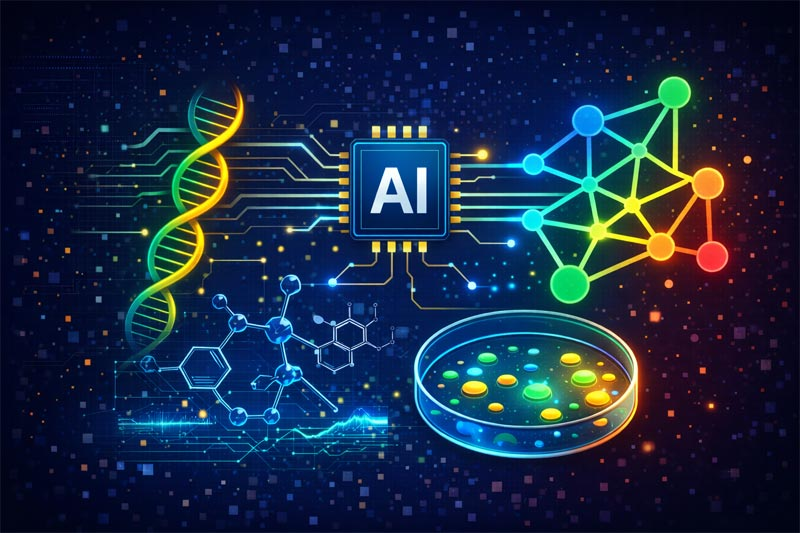
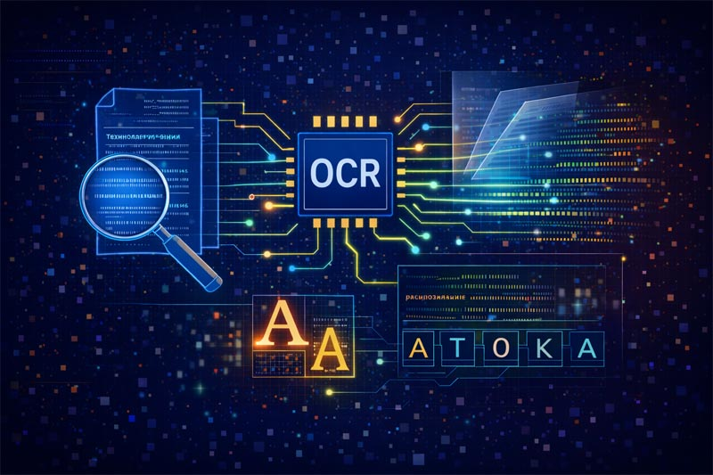

AI and ML application
The publications listed on this page represent my practical research and engineering experience in Artificial Intelligence (AI) and Machine Learning (ML). AI and ML technologies focus on building computational systems capable of learning from data, recognizing patterns, making predictions, and supporting intelligent decision-making. My work primarily involves the design, training, and application of machine learning and deep learning models across various methodological and technological contexts.
The references reflect contributions spanning computer vision, geospatial AI, active learning, multi-agent systems, generative AI, and AI-driven modeling approaches. Rather than emphasizing specific application domains, the works highlight algorithmic development, model optimization, and intelligent data analysis techniques. The research topics are grouped below according to the dominant AI/ML methodologies and technical themes explored in the publications.
AI topics:
Computer Vision / Detection / Segmentation
Computer Vision focuses on enabling machines to interpret and understand visual information derived from images and video data. Detection and segmentation techniques represent key components of computer vision systems, allowing the identification, localization, and structural analysis of objects within visual scenes. The publications listed in this section reflect my work on designing and applying deep learning-based vision models across various computer vision tasks. These studies emphasize algorithmic development, model optimization, and practical implementation of intelligent visual analysis methods.
Ilić V., (2024),
“The Integration of Artificial Intelligence and Computer Vision in Large-Scale Video Surveillance of Railway Stations”,
2024 Zooming Innovation in Consumer Technologies Conference (ZINC), Novi Sad, Serbia
Jovišić N., Ilic V., Ilić S., Šešić I., Dragičević A., (2023)
“Utilizing the Segment Anything Model for Mammography Image Analysis”,
IS'23, 19th International Scientific Conference on Industrial Systems,
Novi Sad
Vajkanovic L., Ilic V., Culibrk D., Cvejić S., Jocić S., Zoric M., (2023)
“Automatic Color Segmentation For Hybrid Sunflower Ray Florets”,
IS'23, 19th International Scientific Conference on Industrial Systems,
Novi Sad
Ilić V., Romić M., Ilić S. (2022)
“Machine learning-based system for weed control on railways”,
ICIST 2022, Kopaonik, Serbia
Ilic T., Ilic V., (2023)
“Analysis of Microbiological Samples using the Segment Anything Model”,
IS'23, 19th International Scientific Conference on Industrial Systems,
Novi Sad
Ilić S. Pavlović M., Antonić N., Ilić V., (2023),
“Tuning the configuration of a convolutional neural network to produce sharper land use/land coverage maps based on satellite imagery”,
ICIST 2023, 13th International Conference on Information Society and Technology, Kopaonik, Serbia
Ilić V., Romić M. Ilić S. (2022),
“Vegetation suppression system on and near the railway tracks based on PLC and deep learning”,
ZINC 2022, ZINC 2020, Novi Sad, Serbia
Ilić V., Romić M., Ilić S. (2022),
“Machine learning-based system for weed control on railways”,
ICIST 2022, 12th International Conference on Information Society and Technology, Kopaonik, Serbia
Arsić A., Ilić V., Pavković B., Samardžija D. (2021)
“System for detecting driver’s drowsiness, fatigue and inattention”,
Telfor 2021, Belgrade, Serbia
Novak, B, Ilić V., Pavković B., (2020)
“YOLOv3 Algorithm with additional convolutional neural network trained for traffic sign recognition”,
ZINC 2020, Novi Sad, Serbia
Ćorović A., Ilić V., Đurić S., Marijan M., Pavković B., (2018)
“The Real-Time Detection of Traffic Participants Using YOLO Algorithm”,
26th Telecommunications forum TELFOR 2018, Belgrade, Serbia
GeoAI / Water Quality / Environmental Monitoring / Atmospheric Science / Geostatistics / Environmental Modeling / Wildfire / Environmental Risk / Remote Sensing
GeoAI and Remote Sensing integrate artificial intelligence with geospatial and environmental data, enabling large-scale analysis, modeling, and prediction of complex natural processes. These approaches combine machine learning, deep learning, and geostatistical techniques to interpret satellite observations and spatial measurements. The publications listed in this section reflect my work on AI-driven environmental modeling, risk assessment, and monitoring methodologies. The studies emphasize predictive modeling, spatial analysis, and hybrid AI–geostatistical frameworks for understanding environmental dynamics.
Durlević U., Ilić V., Aleksova B., (2026)
“Wildfire Probability Mapping in Southeastern Europe Using Deep Learning and Machine Learning Models Based on Open Satellite Data”
, AI, MDPI
Durlević U., Čegar N., Ilić V., Kovjanić A., (2025)
"Machine Learning and Deep Learning Approaches for Wildfire Susceptibility Prediction: A Case Study of the Djerdap Geopark",
Earth Systems and Environment, Springer Nature
Durlević U., Ilić V., Valjarević A., (2025)
“Wildfire Susceptibility Mapping Using Deep Learning and Machine Learning Models Based on Multi-Sensor Satellite Data Fusion: A Case Study of Serbia”,
Fire, MDPI
Tadić J., Ilić V., Ilić S., Pavlović M., Tadić V., (2024)
“Hybrid Machine Learning and Geostatistical Methods for Gap Filling and Predicting Solar-Induced Fluorescence Values”
, Remote Sensing, MDPI
Kostić S., Stojković M., Ilic V., Trivan J., (2023)
“Deep Neural Network Model for Determination of Coal Cutting Resistance and Performance of Bucket-Wheel Excavator Based on the Environmental Properties and Excavation Parameters”
, Processes, MDPI
Tadić J. M., Michalak A. M., Iraci L. T., Ilić V., et al., (2017)
“Elliptic cylinder airborne sampling and geostatistical mass balance approach for quantifying local greenhouse gas emissions”
, Environmental Science & Technology, ACS
Tadić J. M., Ilić V., Biraud S., (2015)
“Examination of geostatistical and machine-learning techniques as interpolators in anisotropic atmospheric environments”
, Atmospheric Environment, Elsevier
Ilić V., Tadić J., Imširagić A., (2016)
“Kriging with machine learning covariates in environmental sciences: A hybrid approach”
, GeoMLA – Geostatistics and Machine Learning, Applications in Climate and Environmental Sciences,
Belgrade, Serbia
Ilić V., Sekulic M. T., Brborić M., Radonić J., Dmitrašinović S., Stojković M., (2025)
“Enhancing the Monitoring System for River Water Quality: Harnessing the Power of Satellite Data and Machine Learning”,
Blue-Green Systems, IWA Publishing.
Ilić V., Stojković M., Dodevska Z., Ilić S. (2024),
“Machine Learning Model for Prediction of Indicative Water Parameters on the Danube River based on Satellite Data”,
ICIST 2024, 14h International Conference on Information Society and Technology,
Kopaonik, Serbia
Ilić S., Antonić N., Kisačanin B., Vilotić M., Ilić V., Ćulibrk D. (2022),
“A Deep Learning Approach to Long-term Monitoring of Environmental Changes Based on Satellite Imagery”,
ICIST 2022, 12th International Conference on Information Society and Technology,
Kopaonik, Serbia
Industrial / Manufacturing / Engineering AI
Industrial, Manufacturing, and Engineering AI focuses on the application of artificial intelligence techniques to technical systems, production processes, and engineered environments. These approaches leverage machine learning and deep learning models to support automation, anomaly detection, predictive analysis, and system optimization. The publications listed in this section reflect my work on developing AI-driven solutions for intelligent industrial and engineering systems. The studies emphasize practical implementation, model design, and data-driven analysis within complex technical infrastructures.
Ilic V., Medojević M., (2023)
“Detection of Anomalies on the Surface of Workpieces Produced on CNC Machines”,
IS'23, 19th International Scientific Conference on Industrial Systems, Novi Sad
Medojević M., Ilić V., (2023),
“A CNN Network-Driven Autonomous Work-Piece Surface Anomalies Detection in CNC Manufacturing”,
AAI2023, The Second Serbian International Conference on Applied Artificial Intelligence (SICAAI)
Medojević M., Ilić V., (2023),
“Autonomous State-Based Determination of the Machine Operation Behavior in the Hinge on Energy Consumption”,
AAI2023, The Second Serbian International Conference on Applied Artificial Intelligence (SICAAI)
Medojević M., Ilić V., (2023),
“Intelligent train-related IoT system for monitoring environmental, safety, and maintenance issues in dynamic spatiotemporal variability along the route”,
ICIST 2023, 13h International Conference on Information Society and Technology, Kopaonik, Serbia
LLMs / Multi-Agent Systems / Generative AI
Large Language Models (LLMs), Multi-Agent Systems, and Generative AI represent a class of AI technologies focused on reasoning, knowledge representation, autonomous interaction, and content generation. These approaches enable systems capable of language understanding, decision-making, collaborative problem solving, and adaptive behavior. The publications listed in this section reflect my work on LLM-driven simulations, multi-agent architectures, and AI-assisted generative systems. The studies emphasize system design, emergent behavior modeling, and practical integration of generative AI methodologies.
Bojić Lj., Ilić V., Prodanović V., Vuković V. (2025)
“An Agent-Based Simulation of Politicized Topics Using Large Language Models: Algorithmic Personalization and Polarization on Social Media”,
Chinese Political Science Review, Springer Nature
Jovišić N., Ilić S., Ilić V. (2024)
“Mirror AI: Self-optimizing multimodal multi-agent AI”,
ICIST 2024, 14th International Conference on Information Society and Technology, Kopaonik, Serbia
Bala K., Ilić V. (2023)
“AI-Powered Programming: Using ChatGPT for Code Generation Support”,
Mathematical Institute of the Serbian Academy of Sciences and Arts, Belgrade
UAV / Robots / Path Planning
Unmanned Aerial Vehicles (UAVs), robotic systems, and path planning techniques represent an important area of AI research focused on autonomous navigation, perception, and intelligent control. These approaches combine machine learning, computer vision, and optimization algorithms to enable adaptive and data-driven decision-making in dynamic environments. The publications listed in this section reflect my work on UAV control, intelligent navigation strategies, and AI-supported spatial analysis. The studies emphasize system design, algorithmic development, and practical implementation of autonomous and semi-autonomous platforms.
Šeljmeši D., Ognjenović V., Ilić, V., Dobrilović D., Brtka, V., Nikolić M. (2025).
“Automated construction of global 3D maps from mobile LiDAR scans in industrial environments”,
Artificial intelligence in Industry 4.0 and 5.0, Belgrade
Šeljmeši D., Ilić V., Ognjenović V., Brtka V., Dobrilović D., (2025)
“Intelligent UAV Surveillance: GIS-Based Path Planning and Post-Flight Object Detection Using YOLOv11”
XV International Conference on Applied Internet and Information Technologies (AIIT 2025), Bitola, N. Macedonia
Bokan D., Cetić N., Kovačević J., Ilić V., (2013)
“Control of unmanned aerial vehicle based on XMOS platform”,
21st Telecommunications Forum (TELFOR 2013), pp. 893-896, ISBN:978-1-4799-1419-7, Belgrade, Serbia
Active Learning
Active Learning is a machine learning paradigm designed to improve model performance while minimizing the need for extensive labeled datasets. These approaches enable models to selectively identify the most informative samples for annotation, thereby optimizing the learning process. The publications listed in this section reflect my work on developing and applying active learning strategies across different machine learning contexts. The studies emphasize algorithmic design, data efficiency, and intelligent sampling techniques for model training and optimization.
Ilić V., Tadić J. M. (2021)
“Active Learning using a Self-Correcting Neural Network (ALSCN)”,
Applied Intelligence, The International Journal of Research on Intelligent Systems for Real Life Complex Problems, ISSN: 0924-669X, Springer
Ilić V., (2024),
“Reducing Manual Labeling Effort by Identifying the Most Informative Unlabeled Data via Active Learning”,
International conference on Applied Internet and Information Technologies (AIIT 2024),
Zrenjanin, Serbia
Wang Y., Ilić V., Li J., Kisačanin B., Pavlović V. (2023)
“ALWOD: Active Learning for Weakly-Supervised Object Detection”,
International Conference on Computer Vision (ICCV 2023)
Ilić V., Prodanović N., Kalušev V. (2023),
“Applying Active Learning in NLP Domin”,
AAI2023, The Second Serbian International Conference on Applied Artificial Intelligence (SICAAI)
AI Bio / Chemistry / Pharmacy
Interdisciplinary research area where artificial intelligence methods are applied to biological, chemical, and molecular data analysis. These approaches enable intelligent modeling, pattern recognition, and computational support for complex scientific investigations. The publications listed in this section reflect my work on integrating AI techniques with bioinformatics, molecular modeling, and data-driven scientific analysis. The studies emphasize methodological development, intelligent data interpretation, and AI-assisted research frameworks.

Krtolica I., Ilić V., Tadić J., (2025),
“Automated Chemical Research with Multi-Agent Collaboration and Molecular Transformers in a Case Study of Aspirin Synthesis”,
ICIST 2025, 15th International Conference on Information Society and Technology, Kopaonik
Ilić V., Ilić T., (2015)
“Software tool for selection restriction enzymes for modification of DNA sequence in plasmids”,
AIIT 2015 International Conference on Applied Internet and Information Technologies,
Zrenjanin, Serbia
Ilic T., Ilic V., (2023)
“Analysis of Microbiological Samples using the Segment Anything Model”,
IS'23, 19th International Scientific Conference on Industrial Systems,
Novi Sad
OCR
Optical Character Recognition (OCR) focuses on enabling computational systems to automatically detect, interpret, and digitize textual information from images and scanned documents. These technologies combine pattern recognition, computer vision, and machine learning techniques to transform visual text into structured digital data. The publications listed in this section reflect my work on the development and application of OCR methodologies, particularly for Cyrillic script recognition. The studies emphasize algorithmic design, character recognition accuracy, and intelligent text processing approaches.

Ilić V., Bajčetić L., Petrović S., Španović I., (2022),
“SCyDia - OCR for Serbian Cyrillic with Diacritics”,
XX EURALEX International Congress, Mannheim, Germany
Ilić V., (2002):
“OCR – Software for recognition Cyrillic letters”,
InfoM – Journal of Information Technology and Multimedia Systems, vol. 1, no. 1, pp. 38-43, Belgrade